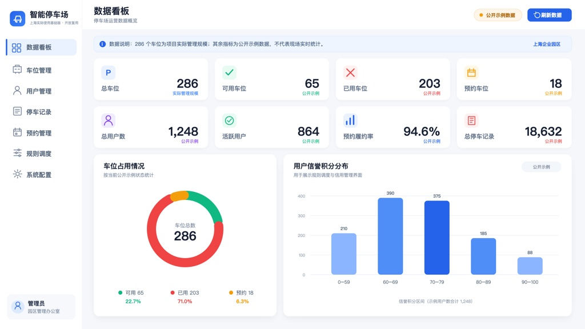

Rule-Based Smart Parking
Management System
Operational use began in March 2026; the running system continued to evolve through later 2026 iterations

01 / ContextThe Problem: Parking Inefficiency in Urban Industrial Parks
Urban parking is a universal pain point. In dense industrial parks where employees commute daily, the challenge compounds: vehicles occupy prime spots for entire workdays, event-driven traffic surges strain capacity, and static allocation rules fail to adapt to changing demand.
Traditional parking management relies on manual enforcement and rigid rules — a reactive approach that addresses symptoms rather than causes. This project treats each parking spot as a dynamically allocatable resource and uses transparent rules, operational data and configurable thresholds to support day-to-day management.
The project design targets four core pain points: long-term spot occupation that reduces turnover, traffic surges during peak hours and events that cause congestion, inefficient spot allocation that ignores vehicle size and accessibility needs, and poor compliance management with no behavioral feedback loop.
Operational deployment. Use began in March 2026 at a corporate industrial park parking facility in Shanghai. Three administrators use all public-edition application modules to manage 286 parking spaces. The running system continued to be iterated after launch. As of the current public snapshot, the public repository and on-site application use the same application source code; this does not mean the August snapshot existed unchanged in March. Private runtime data and credentials are excluded. The corporate industrial park management office can confirm the deployment.
02 / PhilosophyDesign Principle: Discourage Bad, Encourage Good
"弃恶扬善"
Discourage what is harmful; encourage what is beneficial
Rather than building a system that merely punishes violations, this project uses transparent rules, reminders and configurable incentives to make compliant behavior easier. A driver who parks compliantly can earn credit points; violations can be recorded for administrator follow-up. The design keeps automated prompts separate from legal, financial and physical enforcement decisions.
The philosophy draws from four disciplines, each contributing a distinct layer to the system:
Explainable Decision Support
A deterministic historical baseline identifies high-frequency entry periods. A transparent scoring rule evaluates available spots against vehicle size, accessibility needs and floor preference.
Data Science
Parking records support monthly statistics, compliance summaries and traffic trends. The current public implementation keeps these calculations inspectable and does not present them as a trained self-improving model.
Human-Computer Interaction
The browser-based single-page application provides visual status feedback and progressive disclosure so administrators can move between capacity, users, records, reservations and rule prompts without changing tools.
Behavioral Psychology
The credit-and-points system applies operant conditioning principles: positive reinforcement for compliance (points, tier upgrades, service redemptions) and graduated negative consequences for violations (reminders before penalties, temporary restrictions before bans).
03 / ArchitectureSystem Design: Full-Stack with Explainable Rules
The system follows a decoupled architecture where a FastAPI backend exposes more than 50 API route handlers, a pure HTML/CSS/JavaScript single-page application handles the frontend, and a dedicated rule engine contains deterministic traffic-baseline and scheduling logic. Data persists through 9 SQLAlchemy models with relationship mapping.
flowchart TB
subgraph Frontend["Frontend — Pure HTML/CSS/JS SPA"]
UI["Dashboard & Operations Console"]
API_Client["API Client Module"]
end
subgraph Backend["Backend — FastAPI"]
Auth["JWT Authentication"]
R_Users["Users Router"]
R_Spots["Parking Spots Router"]
R_Records["Parking Records Router"]
R_Reservations["Reservations Router"]
R_AI["Rule Scheduling Router"]
end
subgraph RuleEngine["Rule Engine"]
Predictor["Traffic Baseline"]
Scheduler["Smart Scheduler"]
Monitor["Long-Term Parking Monitor"]
Credit["Credit & Points System"]
end
subgraph Data["Data Layer — SQLite"]
DB[("9 ORM Models")]
end
UI --> API_Client
API_Client -->|HTTP/JSON| Auth
API_Client -->|HTTP/JSON| R_Users
API_Client -->|HTTP/JSON| R_Spots
API_Client -->|HTTP/JSON| R_Records
API_Client -->|HTTP/JSON| R_Reservations
API_Client -->|HTTP/JSON| R_AI
R_AI --> Predictor
R_AI --> Scheduler
R_AI --> Monitor
R_AI --> Credit
R_Users --> DB
R_Spots --> DB
R_Records --> DB
R_Reservations --> DB
Predictor --> DB
Scheduler --> DB
Monitor --> DB
Credit --> DB
The rule engine is integrated into the backend so its decisions remain easy to inspect and test. No standardized public latency benchmark is included, so no sub-100ms response-time claim is made.
# Smart scheduling: multi-dimensional spot scoring
def _calculate_spot_score(self, spot, user):
score = 0.0
if spot.is_special_needs and user.is_special_needs:
score += 50 # Accessibility priority
if spot.size.value == user.vehicle_size.value:
score += 30 # Exact size match
score += (10 - spot.floor) * 2 # Lower floors preferred
return score04 / FeaturesFive Core Modules
Each module addresses a specific pain point in the parking lifecycle, from long-term occupation to on-demand allocation. Together they support a management loop: summarize, allocate, monitor, record, and visualize.
Long-Term Occupation Management
Tracks each user's monthly parking days and compares them with a configurable threshold. When the threshold is exceeded, the system produces a management prompt that can support an operator's parking policy and follow-up process.
Traffic Surge Emergency Dispatch
A deterministic baseline summarizes historical entry patterns by hour. When current occupancy exceeds a configured threshold, the system generates a capacity-management prompt for administrators; physical expansion remains an operational decision.
Explainable Space Allocation
A transparent scoring rule assigns available spots based on accessibility needs, vehicle-to-spot size compatibility and floor preference. The result is inspectable and reproducible through the public code.
Credit & Points System
Compliant parking can add credit points and recorded violations can deduct them. The public API supports point redemption against a configurable reward type and preserves an auditable points history.
Operations Management Dashboard
An interactive console shows the latest stored status of parking spaces, records, reservations and users, with on-demand refresh. License-plate search locates matching records, while dashboards summarize occupancy, compliance, traffic history and credit distribution.
05 / ProcessRecorded Design Iterations
The repository includes seven numbered design artifacts and descriptions of several interface directions. These files document intended iteration, while the maintainer's current public documentation records the Shanghai operational status and the public package boundary.
The decision to rewrite the frontend three times — from Streamlit to Gradio to vanilla JavaScript — reflects a willingness to discard working code when a better approach emerges. Each migration was driven by a concrete limitation of the previous framework, not by novelty-seeking.
06 / EngineeringTechnical Foundation
The technology stack was chosen to demonstrate breadth across the full web-development lifecycle, from database modeling to algorithm design to frontend engineering.
07 / SignificanceWhat This Project Demonstrates
Beyond the code, this repository records an end-to-end operational system and its design choices. Operational use began in March 2026 at a Shanghai corporate industrial park parking facility, with 3 administrators and 286 managed spaces, followed by later design and implementation iterations. The park management office can confirm the deployment; site identities, credentials and live operational data are intentionally excluded.
Documented maintainer contribution. For the August public release, the maintainer confirmed the operational scope, set privacy and evidence boundaries, preserved the July-to-August iteration relationship, reviewed public claims against the implementation, separated sample data from private site data, and prepared the package for reuse. These responsibilities document product direction and release stewardship; they do not by themselves prove sole authorship of every code or design artifact. Read the attribution statement.
End-to-End Engineering
From database schema design to API architecture and frontend rendering, the current snapshot covers the main layers of a small web application and integrates them into one runnable system.
Interdisciplinary Synthesis
The design documents discuss incentives, accessibility and interface choices alongside software engineering. The public package does not include personal participant records or a completed human-subject research dataset.
Iterative Design Maturity
Seven design artifacts record changing requirements and interface directions. They provide discussion material about iteration, while authorship and exact chronology should be supported separately when used in an application.
Problem-First Thinking
The current architecture keeps scheduling decisions inspectable. Shanghai operational use informs the system, while each reuse deployment should validate its own rules, integrations and operator workflow.
Self-Directed Learning
The code provides concrete material for discussing FastAPI, SQLAlchemy, JWT authentication, rule-based estimation, responsive CSS, automated tests and package management.
Real-World Applicability
Operational use began in Shanghai in March 2026, followed by continued iteration. As of this public snapshot, this edition uses the same application source as the current on-site application, while omitting site credentials and private runtime data. Environment setup, container packaging, health checks, public-package checks and a SQLite backup utility are included; each adopter must still provide site-specific privacy, monitoring, hardware integration and recovery policies.
This public release is a reusable edition of the Shanghai operational-base system. Public sample data, rule-based estimates, AI-assisted refactoring and site-specific omissions are disclosed so adopters can distinguish reusable code from private deployment configuration.